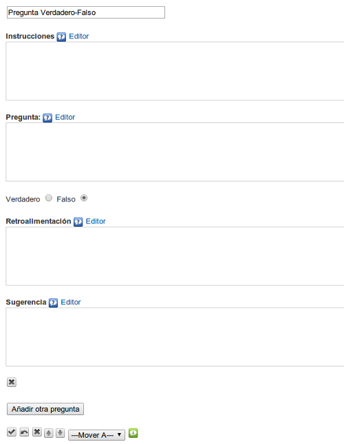

Pregunta Verdadero-Falso
Utilizaremos este iDevice para proponer una (o varias) preguntas que deberán ser respondidas con "Verdadero" o "Falso". Nos permite introducir varios tipos de retroalimentaciones que serán visualizadas por el alumno una vez completadas las actividades o como pistas para realizarlas. Este tipo de actividad facilitará que el alumno pueda comprobar por sí mismo la asimilación de los contenidos trabajados.
Al seleccionar el iDevice "Pregunta verdadero falso" del listado de iDevices se nos mostrará lo siguiente en nuestro eXeLearning:

En la parte superior, tendremos la posibilidad de modificar el título del iDevice.
En el campo "Instrucciones" escribiremos el texto con las instrucciones a seguir para realizar la pregunta Verdadero / Falso.
En el campo "Pregunta" escribiremos el texto de la pregunta. El enunciado deberá ser claro. Evitaremos premisas negativas ya que tienden a ser ambiguas.
Determinaremos si el enunciado que hemos escrito es Verdadero o Falso, marcando la casilla correspondiente
En el campo "Retroalimentación" escribiremos la retroalimentación que queremos que vean los lectores después de haber realizado la actividad. Si dejamos el campo vacío se ofrecerá la retroalimentación por defecto.
En el campo "Sugerencia" podremos proporcionar alguna pista que ayude al estudiante a contestar correctamente la pregunta. Podremos dejar el campo en blanco.
Podremos añadir nuevas preguntas en el iDevice pulsando el botón "Añadir otra pregunta"
Recuerda:
Lo más importante de las preguntas en eXeLearning es cómo las utilizamos.
- Al plantear un caso podemos hacer preguntas que generen dudas.
- Podemos poner preguntas junto a un vídeo para relacionarlo con los objetivos de la materia.
- Al cerrar un contenido podemos hacer preguntas que refuercen las ideas clave.
No es tan importante acertar o fallar la pregunta; es más importante la explicación asociada a la respuesta.
Ejemplos de pregunta Verdadero - Falso: iDevices de eXeLearning
Indica si las siguientes afirmaciones son verdaderas o falsas.
Retroalimentación
Verdadero
eXe Learning es de código abierto. Por tanto su desarrollo puede ser llevado a cabo por aquellos que quieran aplicar mejoras y adaptaciones en la herramienta.
Retroalimentación
Falso
eXe ofrece versiones diferentes para ser instalada en los diferentes sistemas operativos. Todas pueden encontrarse aquí.
Retroalimentación
Verdadero
Al abrir eXe Learning nos encontraremos cuatro zonas bien diferenciadas:
- Estructura: podremos crear índices de nuestros contenidos.
- Menú principal: podremos gestionar los archivos, la impresión, las exportaciones, los estilos, las preferencias de usuario y la ayuda.
- iDevices: diferentes actividades que incluir en los contenidos generados.
- Área de trabajo: en la pestaña "Autoría" podremos visualizar los contenidos creados y en "Propiedades" incluir metadatos referentes a nuestras creaciones.
Retroalimentación
Falso
En el menú principal encontramos estas cuatro opciones: "Archivo", "Utilidades", "Estilo" y "Ayuda".
Practica eXe: ¿Verdadero o falso?
Realiza los siguientes procedimientos:
- Abre el archivo miarchivo2.elp que has creado en la actividad anterior (Puedes hacer doble clic sobre él).
- Crea un nuevo nodo denominado "Preguntas"
- Crea un iDevice "Pregunta Verdadero - Falso" en el nodo "Preguntas". Modifica el título.
- Busca en tu navegador un vídeo de tu gusto e insértalo en el campo "Introducción". Esta vez utiliza el códico de "Compartir" y el botón de "Pegar fragmento de HTML (código embebido)".
- En el campo "Pregunta" escribe una afirmación verdadera respecto al tema del que trata tu vídeo. Rellena la retroalimentación y el campo de sugerencias.
- Añade otra pregunta en la que escribas una afirmación falsa. Rellena de igual modo la retroalimentación y la sugerencia. Recuerda que en estos campos puedes insertar todo tipo de recursos.
- Una vez terminado, haz clic en el botón
 para ver el resultado.
para ver el resultado. - Guarda los cambios. (Archivo > Guardar)
Si tienes alguna duda puedes consultar el siguiente vídeo:
eXeLearning. iDevice Verdadero / falso. (CC by)
Obra publicada con Licencia Creative Commons Reconocimiento Compartir igual 4.0